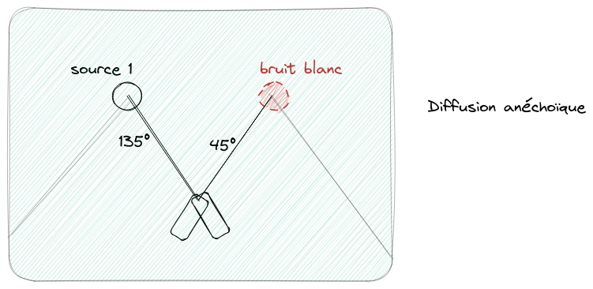
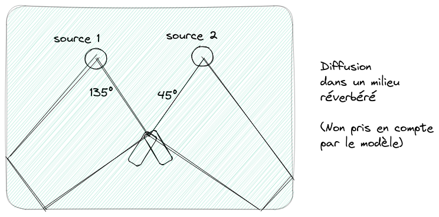

Apprentissage Statistique appliqué au son
Mi205
matfontaine.github.io/MI205
Janvier-Mars 2023
Intervenants TD & TP :
Louis BAHRMAN, Elio GRUTTADAURIA
louis.bahrman@telecom-paris.fr,
elio.gruttadauria@telecom-paris.fr


Organisation du module (1/2)
Evaluation
Examen sur table - 1h (CC, /10)
- Date : 15 mars 2023
Présentation papier - 2h (Oral, /10)
- Date : 15 mars 2023
Addition des 2 notes $\implies$ note sur /20
Organisation du module (2/2)
Programme par tranche horaire (TH)
- 25.01.23 - Optimisation (1H de cours + 2h de TD)
- 01.02.23 - Traitement du signal audio (1h de cours + 2h de TD/TP)
- 08.02.23 - Espérance Maximisation (1h de cours + 2h de TD)
- 15.02.23 - Factorisation de matrices non-negatives (NMF) (1h de cours + 2h de TP)
- 22.02.23 - NMF Multicanal (MNMF) (1h de cours + 2h de TD/TP)
- 08.03.23 - Processus Gaussien (1h de cours + 2h de TP)
- Examen (3h)
Matériel et activités
Bibliographie
- Processus gaussiens pour la séparation de sources Téléchargeable ici
- Convex Optimization Téléchargeable ici
- Pattern Recognition and Machine Learning Téléchargeable ici
- Cours de traitement du signal de Télécom (OASIS) : Téléchargeable ici
Activités
- Diaporama résumant le contenu du cours (démonstration au tableau)
- TD + TP sur des exercices (à la maison ou traité directement en cours)
Compétences acquises
- Comprendre des méthodes d'apprentissage statistiques
- Appliquer ses méthodes pour un problème concret: la séparation de sources sonores
I - Optimisation
Motivations
Notations
- $\Theta$ : ensemble des paramètres
- $\ell$ : loss function
Apprentissage automatique
- Dans le(s) cas (non-)supervisé, on a $(y_1, \dots, y_I)$ des données cibles et $y^\prime_i = f(x;\Theta)$ un estimateur pour une donnée d'entrée $x$.
- Dans les deux cas, on cherche en général à minimiser une fonction de perte.
- Dans le cas supervisé, il peut s'agir de minimiser :
- Non-supervisé : plus délicat à rédiger... $\quad \rightarrow$ Clustering des données : alors on peut se ramener à un cas supervisé. $\quad \rightarrow$ Approche statistique : negative log-likelihood minimization (cf algo EM etc.)
Dans tous les cas, on doit minimiser une fonction $\implies$ problème d'optimisation
Fonction et Ensemble Convexe
Commençons par rappeler quelques definitions essentielles :- Un ensemble $\mathcal{C}$ est convexe si pour tout point $A,B \in \mathcal{C}$ le segment $ \quad \quad\quad ~~~[A,B]= \{\theta A + (1-\theta) B , \theta \in [0,1]\}$ est inclus dans $\mathcal{C}$.
- Une fonction $f$ est convexe si son domaine $dom(f)$ est convexe et
$$ \forall \theta \in [0,1], \forall t_1,t_2 \in dom(f),~ f(\theta t_1 + (1-\theta)t_2) \leq \theta f(t_1) + (1-\theta)f(t_2) $$
Gradient, Hessienne et matrice semi définie positive
On rappelle que :- Le gradient est définit pour $\bold{x} = [x_1, \dots, x_d]^\top$ par
$$\nabla f(\bold{x}) = [\frac{\partial f}{\partial x_1} (\bold{x}), \dots, \frac{\partial f}{\partial x_d} (\bold{x})]^\top$$ - La Hessienne est définie par
$$\nabla^2 f(\bold{x})=\left[\begin{array}{cccc} \frac{\partial^2 f}{\partial x_1^2}(\bold{x}) & \frac{\partial^2 f}{\partial x_1 \partial x_2}(\bold{x}) & \cdots & \frac{\partial^2 f}{\partial x_1 \partial x_d}(\bold{x}) \\ \vdots & \vdots & \ddots & \vdots \\ \frac{\partial^2 f}{\partial x_d \partial x_1}(\bold{x}) & \frac{\partial^2 f}{\partial x_d \partial x_2}(\bold{x}) & \cdots & \frac{\partial^2 f}{\partial x_d^2}(\bold{x}) \end{array}\right]$$ - Une matrice $M \in \mathbb{R}^{d\times d}$ est semie-définie positive si pour tout $\bold{x} \in \mathbb{R}^d\backslash\{\bold{0}_d\}, \bold{x}^\top M \bold{x} \geq 0$. On note $M \geq 0$.
- De manière équivalente, $M \geq 0 \Leftrightarrow$ l'ensemble des valeurs propres de $M$ (le spectre) est dans $\mathbb{R}^+$ (Preuve ?)
Condition au 1er et 2nd ordre de la convexité
On a les résultats suivant pour une fonction convexe $f$ :- $f$ est convexe et différentiable ssi $dom(f)$ est convexe et $\forall x,y \in dom(f),$
$$ \forall x,y \in dom(f),~ f(y) \geq f(x) + \nabla f(x)^\top(y-x) $$ - $f$ est et deux fois différentiable ssi son domaine $dom(f)$ est convexe et $\quad\quad\quad\quad\forall x \in dom(f), \nabla^2 f(x) \geq 0$
Preuve: Du premier point. Le second sera démontré en TD.
Descente de Gradient
- algorithme classique pour résoudre un problème d'optimisation
- fonction convexe $ f$ alors $- \nabla f$ est la direction optimale
L'algorithme se résume comme suit :
- Valeur initiale $x_0$, learning rate $\gamma > 0$ et fonction convexe $f:\mathbb{R}^d \to \mathbb{R}$
- On calcule $x_{1}, \dots, x_{T}$ itérativement comme suit :
$ x_1 \rightarrow x_0 - \gamma \nabla f(x_0) \\ \vdots \\ x_T \rightarrow x_{T-1} - \gamma \nabla f(x_{T-1}) $
si $f$ convexe et $\gamma$ choisit correctement, alors $x_T \underset{T\to \infty}{\rightarrow} x^\star$ avec $x^\star \in \arg \min _{x \in \text{dom}(f)}f(x)$ une valeur optimale.
Fonction Lipischitzienne
La convergence de la descente de gradient sera montré dans le cas de fonction convexe et Lipschitzienne.Remarque:
- Une fonction $K$-Lipschitzienne n'est pas forcément dérivable.
- Si elle est cependant dérivable, sa dérivée est bornée par $K$ (démo au tableau)
Preuve: au tableau.
Problème sous contraintes
Certains problèmes d'optimisation sont réalisés sous contrainte. C'est à dire que l'on souhaite par exemple résoudre :Dans ce cours, nous survolons les résultats généraux pour prouver:
- Si des solutions existent (et dans quel cas);
- Comment déterminer ses solutions.
Les preuves concrètes sont dans le Boyd.
Condition d'existence de solutions
Une première question est quand avons-nous existence d'au moins une solution ?Preuve: Au tableau.
Cas des fonctions convexes
Cas convexe
Si on se place dans le cas où $f$ est une fonction convexe et que $U$ est un convexe On a le résultat suivant :Fonction Lagrangienne, Karush-Kuhn-Tucker
On reprend notre problème :Qualifications de contraintes
On cite ici deux qualifications de contraintes importantes (mais d'autres existent dans la littérature). On définit $I^\star$ l'ensemble des entiers tel que $g_i(x^\star)=0$.Qualification des contraintes d'indépendance linéaire (LICQ)
Qualification des contraintes de Mangasarian-Fromovitz (MFCQ)
Remarque : LICQ $\implies$ MFCQ
Problème avec contraintes d'égalités
On considère le problème : $\underset{\bold{h}(x) = 0}{\min} f(x)$Attention ! Il s'agit en général d'un point-selle (pas forcément le minimum global)
Les conditions de KKT au final sont bien satisfaites (sauf la dernière ligne car nous n'avons pas de contraintes d'inégalités)Problème avec contraintes mixtes
On considère le problème :Cependant, les LICQ sont parfois fortes à vérifier on a donc alternativement le résultat suivant :
II/1 - Traitement du signal audio : généralités
QU'est-ce qu'un signal ?
Représentation temporelle vs. domain temps-fréquence
- Directement la représentation de l'amplitude
- Plus interprétable
La transformée de Fourier discrète
Soit un signal discret $x_0,\dots,x_{N-1}$. Sa transformée de Fourier (discrète) est:- On obtient une représentation fréquentielle du signal
- Complexité algorithmique : $O(N^2)$

Transformée de Fourier à Court Terme (TFCT)
- Découpage d'un signal en plusieurs séquences
- multiplication par un fenêtrage (Pourquoi ? cf. Slide suivante)
- FFT sur chacune des séquences

Pourquoi multiplier par une fenêtre ?
Considérons le signal suivant supposé échantillonné à une fréquence $1/T$ :- A gauche: difficile d'observer le second lobe principale correspondant à la première onde (les lobes secondaires de la seconde onde les recouvrent)
- A droite ($x(t)w(t)$ avec $w$ une fenêtre de Hamming): on observe que : $\quad \rightarrow$ Les deux lobes principaux sont identifiables $\quad \rightarrow$ Légère perte de résolution pour les lobes principaux
Spectrogramme de puissance (SP)
- Module au carré des coefficients
- Pour une meilleure représentation, on calcule le log du SP.

II/2 - Traitement du signal audio : séparation de sources (généralités)
Séparation de sources en musique

Séparation de sources (général)
- Art d'estimer des signaux sources, souvent supposés indépendants, via l'observation d'un ou plusieurs mélanges de ces sources
Exemples d'applications
- Débruitage/séparation de locuteurs
- Séparation d'instruments de musique
Typologie des modèles de mélanges
Notations
- Observations: $M$ mélanges $x_m(t)$ concaténés dans un vecteur $\bold{x}(t)$
- inconnus: $N$ sources ponctuelles $s_n(t)$ concaténé dans un vecteur $\bold{s}(t)$
- Modèle de mélange général: Une fonction $\mathcal{A}$ qui transforme $\bold{s}(t)$ en $\bold{x}(t)$
Deux types
- mélange linéaire instantanée : $\bold{x}(t)=\bold{A}\bold{s}(t) \\ \quad\rightarrow \mathcal{A}$ est définie par la "matrice de mélange" $\bold{A}$ (de dimension $M\times N$)
- mélange convolutif : $x_m(t) = \sum_{n=1}^{N} a_{nm}(t) \star s_n(t)$
Vocabulaire
- mélanges déterminés : $M=N$
- mélanges surdéterminés : $M>N$
- mélanges sous-déterminés : $M < N$
Vecteurs aléatoires
Notations
$\bold{x}$ est un vecteur aléatoire de dimension $M$.- les crochets $\phi[\bold{x}]$ dénotent une fonction de $p(\bold{x})$
- Moyenne : $\mu_{x}=\mathbb{E}[\bold{x}]$
- Matrice de covariance : $\Sigma_{xx}=\mathbb{E}[(\bold{x}-\mu_x)(\bold{x}-\mu_x)^\mathsf{H}]$
Vecteur gaussien complexe circulaire
- $\bold{x}$ où $\Re(\bold{x})$ et $\Im(\bold{x})$ sont gaussiens et $e^{i\phi}\bold{x} \overset{d}{=} \bold{x}, \forall \phi \in [0,2\pi[$
- Densité de probabilité (définie si $\Sigma_{xx}$ est inversible)
$$ p(\bold{x})=\frac{1}{\pi^{M}\det(\Sigma_{xx})} \exp((\bold{x}-\mu_x)^{\mathsf{H}}\Sigma_{xx}^{-1}(\bold{x} - \mu_x))$$ - On notera $\bold{x} \sim \mathcal{N}_{\mathbb{C}}^{M}(\mu_x, \Sigma_{xx})$ et $\bold{x} \sim \mathcal{N}_{\mathbb{C}}^{M}(\Sigma_{xx})$ si $\mu_x=0$
- Si $\mu_x=0$ $\implies$ vecteur gaussien complexe circulaire centré (GCCC)
II/3 - Traitement du signal audio : séparation de sources (ICA)
Séparation de sources aveugle (BSS) (1/2)
Modèle d'observation
- Mélange linéaire instantané :
$$\forall t, \bold{x}(t)=\bold{A}\bold{s}(t)$$ $\quad\rightarrow\bold{A}\in\mathbb{R}^{M\times K}$: "matrice de mélange" -
Les sources sont supposées iid. :
$$p(\{s_n(t)\}_{n,t})=\prod\limits_{n=1}^{N}\prod\limits_{t=1}^{T}p_n(s_n(t))$$
Problème de la BSS : estimer $\bold{A}$ et les $\bold{s}(t)$ étant donné $\bold{x}(t)$Séparation de sources aveugle (BSS) (2/2)
Non-mixing matrix
- Une matrice $\bold{C}$ de dimension $N\times N$ est non-mixing ssi. elle admet une unique entrée non-nulle pour chaque ligne et chaque colonne.
- Si $\tilde{\bold{s}}(t) = \bold{C}\bold{s}(t)$ et $\tilde{\bold{A}}=\bold{A}\bold{C}^{-1}$, alors $\bold{x}(t)= \tilde{\bold{A}}\tilde{\bold{s}}(t)$ est une autre décomposition admissible des observations. $\quad\rightarrow$ Les sources peuvent donc être estimé à une permutation et à un facteur multiplicatif près.
Séparation de sources linéaire
Model
-
Soit
$$\bold{y}(t)=\bold{B}\bold{x}(t)$$ $\quad\rightarrow\bold{B}\in\mathbb{R}^{N\times M}$: "matrice de séparation"
Faisabilité
- La séparation linéaire est faisable si $\mathrm{rank}(\bold{A})=N$
- Sous les conditions précédentes, on obtient :
$$\bold{B} = \begin{cases} \bold{B} = \bold{A}^{-1} & \mathrm{si} ~ M=N \\ \bold{B} = \bold{A}^{\dagger} = (\bold{A}^\top\bold{A})^{-1}\bold{A}^\top & \mathrm{si} ~ M>N \quad\quad \texttt{(pseudo-inverse)}\\ \emptyset & \mathrm{si} ~ M< N \end{cases} $$
Dans le cas de la BSS, la matrice $\bold{A}$ est inconnueIndepedent component analysis (ICA) (1/2)
Problem Statement
- $\bold{A}$ est inconnue et on cherche $\bold{B}$ qui rendent les $y_n(t)$ indépendants (ICA)
-
On obtient l'équation :
$$\bold{y}(t) = \bold{C}\bold{s}(t)$$ $\quad\rightarrow$ où $\bold{C}=\bold{BA}$ $\quad\rightarrow$ $\bold{C}$ est non-mixing $\implies$ le problème est résolu.
Indepedent component analysis (ICA) (2/2)
Théorème [d'identifiabilité]Soit $\{s_n(t)\}_{n=1\dots N}$ les $N$ sources iid., avec au plus une source Gaussienne et :$$ \bold{y}(t) = \bold{C}\bold{s}(t) $$ avec $\bold{C}$ inversible (i.e. $M \geq N$).Si les $y_n(t)$ sont indépendants, alors $\bold{C}$ est non-mixing
Blanchiment (1/3)
- Modèle :
$ \begin{cases} \mathbb{E}[\bold{s}(t)]=0 \\ \bold{R}_{ss}(\tau) = \mathbb{E}[\bold{s}(t+\tau)\bold{s}(t)^\top] = \mathrm{diag}(r_{s_k}(\tau)) \end{cases} \quad\texttt{(processus centrée SSL)} $ - Problème canonique (PC): on suppose que $\Sigma_{ss}=\bold{R}_{ss}(0)=\bold{I}$
-
Alors
$$ \Sigma_{xx} = \bold{A}\Sigma_{ss}\bold{A}^\top =\bold{A}\bold{A}^\top $$ $\quad\rightarrow$ $\bold{A}$ est une racine carré de la matrice $\bold{\Sigma}_{xx}$
Blanchiment (2/3)
Decorrelation (Blanchiment) de $\Sigma_{xx}$
-
$\Sigma_{xx}$ est diagonalisable dans une base orthonormée :
$$ \Sigma_{xx} = \bold{Q}\Lambda^2\bold{Q}^\top $$ $\quad\rightarrow \Lambda= \mathrm{diag}(\lambda_1, \dots, \lambda_M)$ avec $\lambda_1 \geq \dots \geq \lambda_N >\lambda_{N+1} = \dots =\lambda_{M} = 0$ $\quad\quad (\mathrm{rank}(\Sigma_{xx}) = N)$ - Soit $\bold{S} = \bold{Q}_{(:, 1:N)}\Lambda_{(1:N, 1:N)} \in \mathbb{R}^{M\times N}$ alors $\Sigma_{xx} = \bold{S}\bold{S}^\top$
-
Soit $\bold{W} = \bold{S}^{\dagger}, \bold{z}(t) = \bold{W}\bold{x}(t)$ alors :
$$ \begin{cases} \mathbb{E}[\bold{z}(t)] = 0, \\ \Sigma_{zz} = \bold{W}\Sigma_{xx}\bold{W}^\top = \bold{I} \end{cases}\quad\quad\texttt{(z est dit "blanc")} $$
Blanchiment (3/3)
Conclusion
- Sans perte de généralité : $\bold{U} := \bold{WA}$ est une matrice de rotation ($\bold{UU}^\top = \bold{I}$)
-
Alors :
$$ \bold{y}(t) = \bold{U}^\top \bold{z}(t) = \bold{U}^\top\bold{W}\bold{x}(t) = \bold{s}(t) $$ - On peut supposer que $\bold{B} = \bold{U}^\top\bold{W}$ où $\bold{U}$ est une matrice de rotation
- De plus $\forall \tau \in \mathbb{Z}, \bold{R}_{zz}(\tau) = \bold{U}\bold{R}_{ss}(\tau)\bold{U}^\top$
 La diagonalisation jointe de $\bold{R}_{zz}(\tau)$ pour plusieurs $\tau$ va donner $\bold{U}$
La diagonalisation jointe de $\bold{R}_{zz}(\tau)$ pour plusieurs $\tau$ va donner $\bold{U}$Diagonalisation jointe
Théorème [d'unicité de la diagonalisation jointe]Soit $\{\bold{R}_{zz}(\tau)\}_{\tau} \in \mathbb{R}^{N\times N}$ telles que :$$ \bold{R}_{zz}(\tau) = \bold{U}\bold{R_{ss}(\tau)}\bold{U}^\top $$ $\bold{U}$ est unique $\Leftrightarrow \forall 1\leq k \neq l \leq K~ \exists \tau, r_{s_k}(\tau) \neq r_{s_l}(\tau)$Méthode de diagonalisation jointe
- Minimiser : $J(\bold{U}) = \sum_\tau\mid\mid \bold{U}^\top\bold{R}_{zz}(\tau)\bold{U} - \mathrm{diag}(\bold{U}^\top\bold{R}_{zz}(\tau)\bold{U}) \mid\mid_{F}^2$
- Parametrisation de $\bold{U}$ comme des rotations de Givens et descente de gradient par coordonnées
- A. Belouchrani, "A blind source separation technique using second-order statistics," in IEEE TSP (1997)
Algorithme Second Order Blind Identification (SOBI)
- Estimation de $\Sigma_{xx}$
- Diagonalisation: $\Sigma_{xx} = \bold{Q}\Lambda^2\bold{Q}^\top$
- Calculer $\bold{S}=\bold{Q}_{(:, 1:K)}\Lambda_{(1:K, 1:K)}$ and $\bold{W}= \bold{S}^{\dagger}$
- Blanchiement des données : $\bold{z}(t) = \bold{W}\bold{x}(t)$
- Estimation de $\bold{R}_{zz}(\tau)$ pour différentes valeurs $\tau$
- Approximation de la diagonalisation jointe $\bold{R}_{zz}(\tau)$ dans une base commune $\bold{U}$
- Estimation des sources via $\bold{y}(t) = \bold{U}^{\top}\bold{z}(t)$
Exemple de SOBI sur différents mélanges (1/2)
Exemple de SOBI sur différents mélanges (2/2)

II/4 - Traitement du signal audio : séparation de sources (mélange convolutif)
Source images
Modèle de mélange instantané : non adapté aux mélanges réelsMélange de sources images
- Soit $\bold{x}_n(f,t) \in \mathbb{R}^M$ la source image de $s_n(f,t)$
$\quad\rightarrow$ on reçoit un signal multicanal ssi la source $s_n(f,t)$ est active - Modèle de mélange : $\bold{x}(f,t) = \sum_{k=1}^K \bold{x}_n(f,t)$
Décomposition du problème de séparation de sources
- Séparation : estimer $\bold{x}_n(f,t)$ à partir du mélange $\bold{x}(f,t)$
- Déconvolution : estimer $s_n(f,t)$ à partir de la source image $\bold{x}_n(f,t)$
Représentation temps-fréquence (TF)
Motivation
- Adéquat pour étudier les modèles convolutifs et/ou sous-déterminés
Banc de filtre de la TFCT
- Décomposition dans $F$ sous bandes et décimation en facteur $H \leq F$
- $H$ est appelée la hop-size
- filtres d'analyse $h_f$ et filtres de synthèses $g_f$
- Représentation TF du mélange : $x_m(f,t) = (h_f\ast x_m)(tH)$
- Reconstruction parfaite : $x_m(\tau) = \sum_{f=1}^F\sum_{t\in \mathbb{Z}} g_f(\tau-tH)x_m(f,t)$
Alors $\forall f,n ~ \bold{x}(f,t) = \bold{As}(f,t)\quad\texttt{(mélange linéaire instantané)}$Approche temps-fréquence
modèle de mélange et approximation à bande étroite
- $x_m(t) = \sum_{n=1}^{N}(a_{mn} \ast s_n)(t)$,
- La réponse impulsionnelle de $a_{mk}$ est courte p/r à la longueur de la fenêtre
- $\forall m,n,f, a_{mn}(\nu)$ varie lentement comparé à $h_f(\nu)$
Approximation du modèle de mélange convolutionnel
- $x_m(f,t)=\sum_{n=1}^N a_{mn}(f)s_n(f,t)$ i.e. $\bold{x}(f,t)=\bold{A}(f)\bold{s}(f,t)$
$\quad\rightarrow$ $F$ mélange de modèles instantanés dans chaque sous-bande fréquentielle
$\quad\rightarrow$ on peut utiliser une méthode d'ICA dans chaque sous-bande
Problème : si on utilise un algorithme de type ICA, on a une infinité de solutions (on doit constraindre le modèle)Indéterminations
Indéterminations (permutations et facteurs multiplicatifs) dans les matrices $\bold{C}(f)$- $\forall n$, identifier les index $n, f$ tel que $\forall f, y_{k_f}(f,t)=c_{k_f,k}s_k(f,t)$
- identifier les facteurs multiples $c_{k_f,k}$
Une infinité de solutions $\implies$ besoin de contraindre le modèleHypothèses sur le mélange ou les sources
- modèle continue le long de l'axe fréquentielle des $a_{mk}(f)$
$\quad\rightarrow$ modèle comme formation de voie ou modèle anéchoïque - similarité sur l'axe temporelle des $p_n(f,t)$ (ou modèle NMF. Plus tard ! )
Modèles continues de diffusion
Formation de voies
- Hypothèses : ondes planes, champ lointain, pas de réverbération, antenne linéaire
- Modèle : $a_{mn}(f)=e^{-2i\pi f\tau_{mn}}$ où $\tau_{mn}=\frac{d_m}{c}\sin(\Theta_n)$
- Paramètres : positions $d_m$ des capteurs et les angles $\Theta_n$ des sources
Modèle anéchoïque
- Hypothèses : source ponctuelle, pas de réverbération
- Modèle : $a_{mn}(f)=\alpha_{mn}e^{-2i\pi f\tau_{mn}}$ avec $\tau_{mn}=\frac{r_{mn}}{c}$ et $\alpha_{mn} = \frac{1}{\sqrt{4\pi}r_{mn}}$
- Paramètres : distances $r_{mn}$ entre les micros et les sources
Separation via un filtre non stationnaire
Considérons $\bold{y}(f,t) = \bold{B}(f,t)\bold{x}(f,t)$ où $\bold{B}(f,t) \in \mathbb{C}^{N\times M}$Estimation via l'erreur moyenne quadratique
- On cherche $\bold{B}(f,t)$ qui minimise $\mathbb{E}[\mid\mid\bold{y}(f,t)-\bold{s}(f,t)\mid\mid^2_{2} ]$
- Sol.: $\bold{B}(f,t) = \Sigma_{sx}(f,t)\Sigma_{xx}(f,t)^{-1}~\texttt{(Filtre de Wiener)}$
$\quad\rightarrow \Sigma_{xx}(f,t) = \bold{A}(f)\Sigma_{ss}(f,t)\bold{A}(f)^{\mathrm{H}}, \Sigma_{sx}(f,t) = \Sigma_{ss}(f,t)\bold{A}(f)^{\mathrm{H}} $ - $\bold{x}(f,t)=\bold{A}(f)\bold{y}(f,t)$ (reconstruction exacte)
cas particulier : cas monocanal
- sans perte de généralité, on définit $\bold{A}(f)=\left[\begin{array}{ccc} 1 & \dots & 1\\ 0 & \cdots & 0\\ \vdots & \cdots & \vdots \end{array}\right]$
- Alors $y_n(f,t) = \frac{p_n(f,t)}{\sum_{n^\prime=1}^Np_{n^\prime}(f,t)} x(f,t) ~~~~\texttt{(Filtre de Wiener monocanal)}$
Formalisme probabiliste pour la séparation de sources images
Prenons cette fois-ci le modèle de mélange de sources images :$$ \bold{x}(f,t) = \sum_{n=1}^{N}\bold{x}_n(f,t) $$ $\forall n,f,t$ indépendances et suivent une GCCC :$$ \bold{x}_n(f,t) \sim \mathcal{N}_{\mathbb{C}}^{M}(\Sigma_{n}(f,t)) $$ Alors, par indépendance et stabilité par sommation on a que :$$ \bold{x}(f,t) \sim \mathcal{N}_{\mathbb{C}}^{M}(\sum_{n=1}^{N}\Sigma_{n}(f,t) := \Sigma(f,t)) $$ On peut montrer que :$$ \bold{x}_n(f,t) \mid \bold{x}(f,t) \sim \mathcal{N}_{\mathbb{C}}^{M}(\mu_{\bold{x} \mid \bold{n}}, \Sigma_{\bold{x} \mid \bold{n}}) $$ avec$$\mu_{\bold{x} \mid \bold{n}} = \Sigma_{n}(f,t) \Sigma(f,t)^{-1}\bold{x}(f,t) ~~\texttt{(Filtrage de Wiener)}$$ $$\Sigma_{\bold{x} \mid \bold{n}} = \mu_{\bold{x} \mid \bold{n}}\mu_{\bold{x} \mid \bold{n}}^{\mathsf{H}} + (\bold{I_{M}} - \Sigma(f,t)^{-1})\Sigma_{n}(f,t) ~~\texttt{(covariance conditionnelle)}$$ En soit, le modèle probabiliste GCCR ou l'EMQ sont ici équivalents.
 Apprentissage statistique & son - MI205
Apprentissage statistique & son - MI205 - Séparation d'instruments de musique